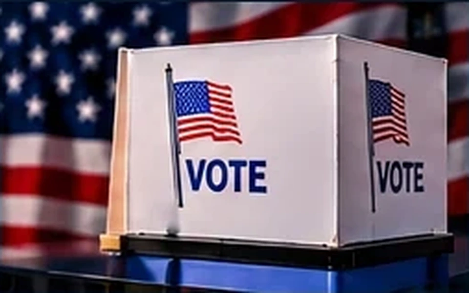

ELECTIONS | OCTOBER 30, 2026
BALLOT BOX BATTLE: FEDERAL SUBPOENAS SHAKE CALIFORNIA VOTE FIGHT!
Federal investigators seek election records amid a heated dispute over voter eligibility.

The Justice Department subpoenaed Los Angeles County election workers for records and testimony in a federal investigation involving allegations about noncitizens on voter rolls. A federal judge has already rejected an effort to separate certain ballots and raised concerns about restrictions on last-minute election changes. The allegations are disputed, and the subpoenas do not establish that any particular worker committed wrongdoing. With Election Day approaching, the legal dispute is unfolding while officials continue processing ballots. The case illustrates how rapidly court proceedings and election administration can collide.
Why it matters: The latest developments show why it is important to separate confirmed information from speculation and follow the underlying reporting.
And One More Thing…
Election season has become so complicated, the ballot may need its own lawyer.